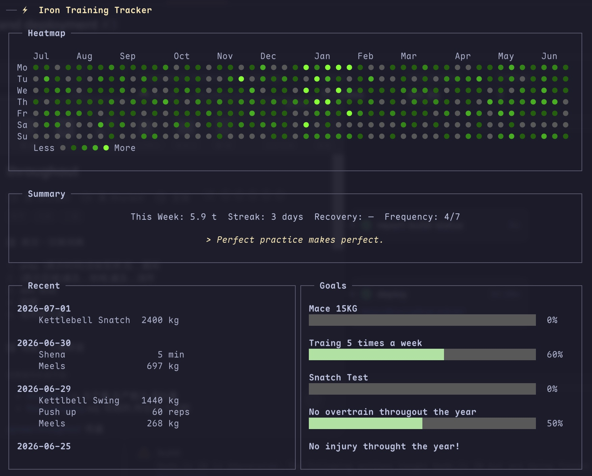

iron 🏋️
A terminal UI application for tracking training records, built in Rust.
View on GitHub

Installation
$ cargo install --git https://github.com/hjw/iron
Features
Vim-style navigation (j/k, h/l)
Contribution heatmap
Fast, local SQLite storage